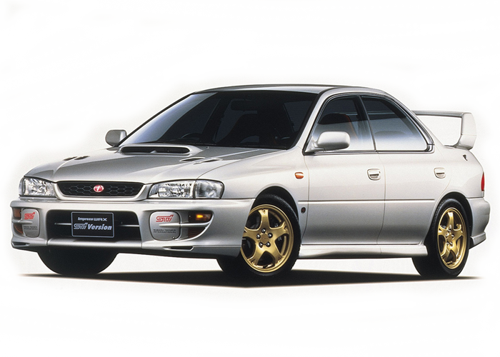

My main interests have been in video games (about 17 years), Music (about 7 years), Cars (about 2 years). My love and interest of video games comes from my brothers! That passion has slowly turned into a want to make games. With cars, I turned to them to give me a thrill and they are interesting to learn and difficult to completely know what you are doing. Music as always been an interest for me because it helps me focus!
| Video Games | Music | Cars | |
|---|---|---|---|
| September | $92 | $13 | $78 |
| October | $31 | $13 | $320 |
| November | $0 | $13 | $63 |
| December | $125 | $13 | $108 |
| January | $23 | $13 | $130 |
Cars has always been an expensive hobby but hopefully with my web dev certificate and future job, it will be an easy thing to afford. Video games are my variable when budgeting just because I really never know when a sale will hit or when a game I absolutely have to play early will come out. Music is the only stable spending just because I only get spotify every month. Overall I think my spending is very mild compared to similar hobbies, I hope to continue my hobbies and bad spending habits for a long time!
